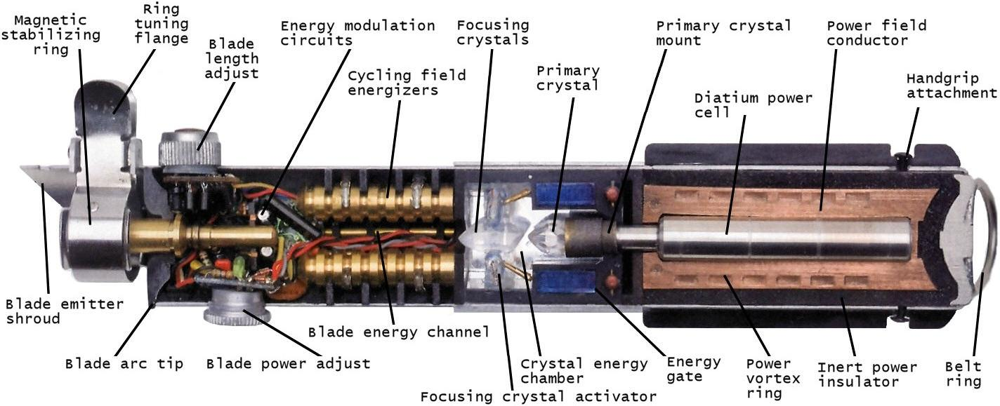

To truly master even the most basic of sabre forms a Jedi must be perfectly in tune with his weapon. To achieve this resonance each Padawan must construct their sabre using the right combination of kyber crystals to match their own personal signature in the Force. Select crystals from below until the sabre’s aura matches the padawan’s. And remember, do or do not. There is no try.
You have a count of hundred midi-chlorians

Current attunement of Lightsabre
The crystal is the heart of the blade.
The heart is the crystal of the Jedi.
The Jedi is the crystal of the Force.
The Force is the blade of the heart.
All are intertwined.
The crystal, the blade, the Jedi.
You are one.
The heart is the crystal of the Jedi.
The Jedi is the crystal of the Force.
The Force is the blade of the heart.
All are intertwined.
The crystal, the blade, the Jedi.
You are one.
Total Sabres built: Total Failures: